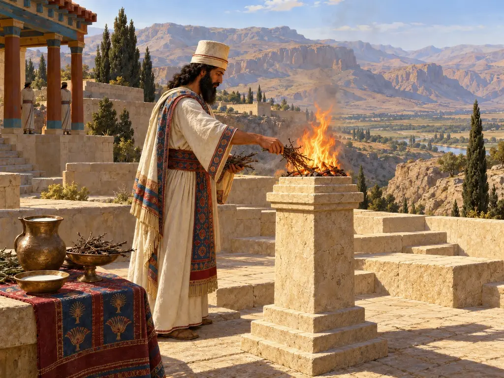
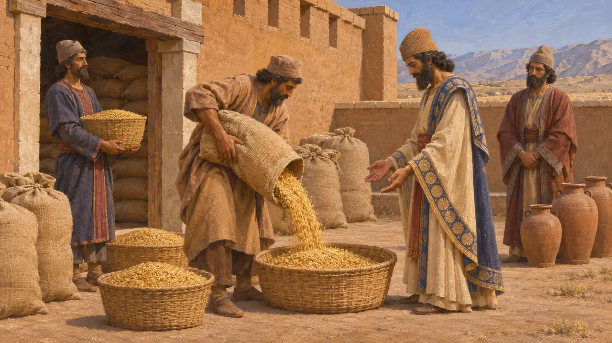
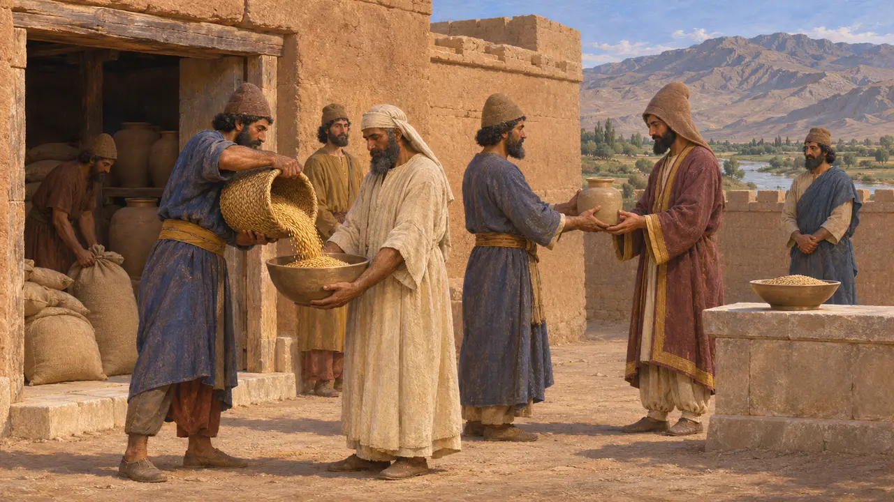
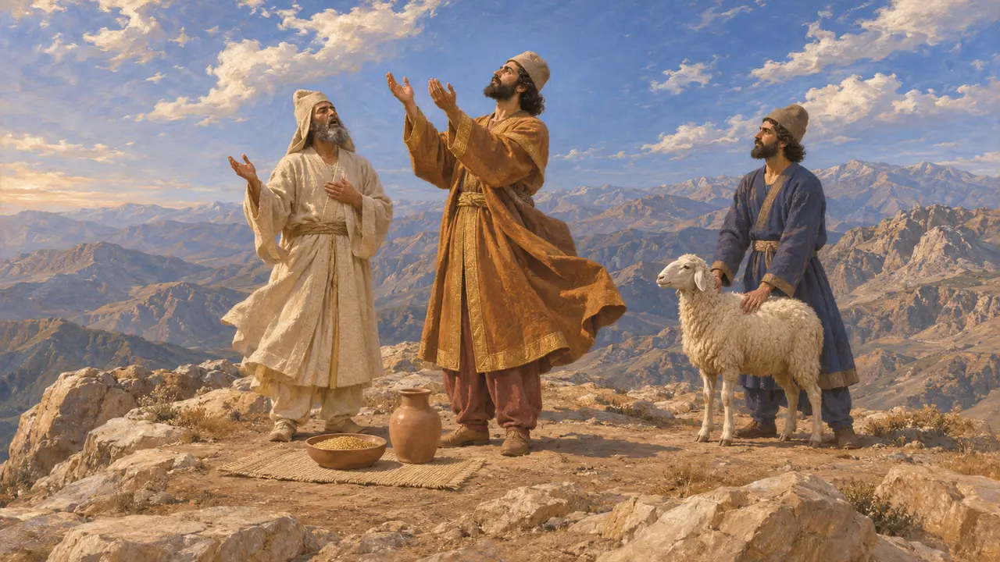
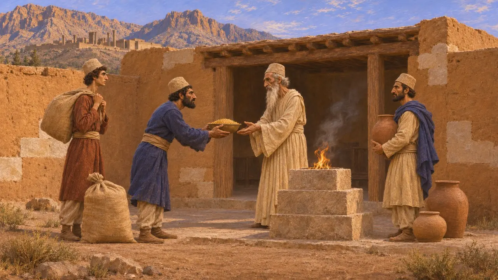

نذورات به خدایان
تحویل غله و کالا از انبارهای شاهی برای قربانی، ثبتشده در تخت جمشید، حدود 509-493 پ.م.
دستگاه اداری شاه هزینهٔ قربانیها را میپرداخت. لوحهای گلی تخت جمشید جو، آرد، شراب، آبجو و دامهایی را ثبت کردهاند که از انبارهای شاهی به کاهنان داده میشد. کاهنان آنها را پیشکش خدایان پارسی، عیلامی و دیگر خدایان میکردند، بهویژه در آیینی منظم به نام «لَن». این لوحها نشان میدهند که دربار از آیینهای بسیاری در سراسر پارس و عیلام پشتیبانی میکرد. این تصویر با وصف هرودوت از پرستش پارسیان چندان سازگار نیست.
در بازی: فرمانی پایدار در صفحهٔ مالیاتهای دفتر حساب هر ماه جو را از انبارهای غله برای خدایان میفرستد و پرداخت کامل آن لطف شاه را میافزاید. لوحها از توزیعهایی گستردهتر و خدایانی بسیار خبر میدهند، و ادعای هرودوت دربارهٔ نبودِ معبد مورد مناقشه است.

غله برای آیین لَن
در اسنادگلنوشتههای باروی تخت جمشید، متنهای دیوانی عیلامی از حدود 509 پ.م. تا 493 پ.م.، پرداختهای منظم کالا برای آیینی به نام «لَن» را ثبت کردهاند. بیشتر این پرداختها غله بود، هرچند آرد، شراب و آبجو نیز در آنها دیده میشود، و اغلب به صورت مقدارهای ثابت ماهانه در سراسر سال. هنکلمن بر آن است که لَن پیشکشی دولتی بود که هزینهاش را اقتصاد شاهی میپرداخت. بیشتر متنها نام هیچ خدایی را برای آن نمیآورند، هرچند چند متن آن را با اهورامزدا پیوند میدهند.
W. Henkelman, The Other Gods Who Are, 2008; R. Hallock, Persepolis Fortification Tablets, 1969

خدایان بسیار در فهرستهای جیره
در اسنادهمین بایگانی هزینهٔ پیشکشهایی را برای خدایان عیلامی چون هومبان، برای اَدَد، خدای توفان میانرودان، برای اهورامزدا و نیز برای کوهها و رودها تأمین میکند. برگزارکنندگان این آیینها اغلب کاهنان عیلامی به نام «شاتین» یا مغان ایرانی بودند و آذوقهٔ خود را از انبارهای محلی برمیگرفتند. به نظر میرسد دستگاه دیوانی هزینهٔ پرستش جمعیت آمیختهٔ منطقه را میپرداخت، نه آیینی شاهی و انحصاری.
W. Henkelman, The Other Gods Who Are, 2008; P. Briant, From Cyrus to Alexander, 2002

هرودوت دربارهٔ قربانی پارسیان
روایت باستانیهرودوت میگوید پارسیان تندیس و معبد و محراب برپا نمیکردند و بر ستیغ کوهها برای خدای آسمان قربانی میکردند و نیز برای خورشید، ماه، زمین، آتش، آب و بادها. او میافزاید که هیچ قربانیای بیحضور مغی که سرود بخواند روا نبود و نیایشگر برای شاه و همهٔ پارسیان دعا میکرد. او آیینی بیگانه را از بیرون و با واژگان یونانی وصف میکرد.
Herodotus 1.131-132

آیا پارسیان معبد داشتند
مورد مناقشهیادداشت بازی از هرودوت پیروی میکند، اما اسناد پارسی کار را پیچیدهتر میکنند. داریوش در بیستون میگوید که «آیَدَنه»ها، یعنی نیایشگاههایی را که گئومات ویران کرده بود، بازسازی کرد. خشایارشا در کتیبهٔ XPh میگوید که پرستشگاهی از آنِ دیوها را ویران کرد و در جای آن اهورامزدا را پرستید. تاریخنگاران هنوز بر سر چیستی این پرستشگاهها و اینکه آیا هیچ بنای کاوششدهای معبد بوده است یا نه، بحث میکنند؛ از این رو این ادعا را که پارسیان معبد نمیساختند نمیتوان واقعیتی قطعی دانست.
DB §14; XPh; P. Briant, From Cyrus to Alexander, 2002
منابع
- W. Henkelman, The Other Gods Who Are, 2008
- Herodotus 1.131-132
- DB §14
- XPh
- R. Hallock, Persepolis Fortification Tablets, 1969
- P. Briant, From Cyrus to Alexander, 2002